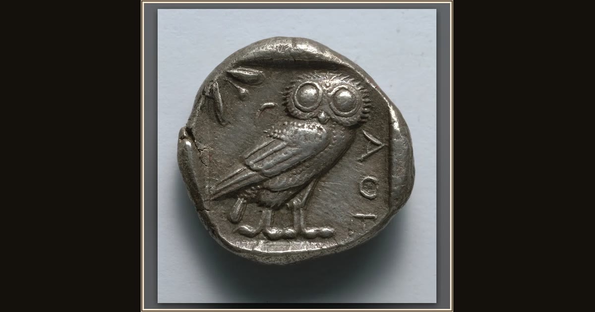

Tetradrachm: Owl (reverse)
Greek, minted at Athens (Attica) · 449–407 BCE · cma
An Athenian silver tetradrachm bears an owl. Thucydides describes the Athenians raising a two-hundred-talent contribution and sending ships to collect money from allies for the siege of Mitylene (3.19.1) Explore its place in Thucydides's History of the Pelopon